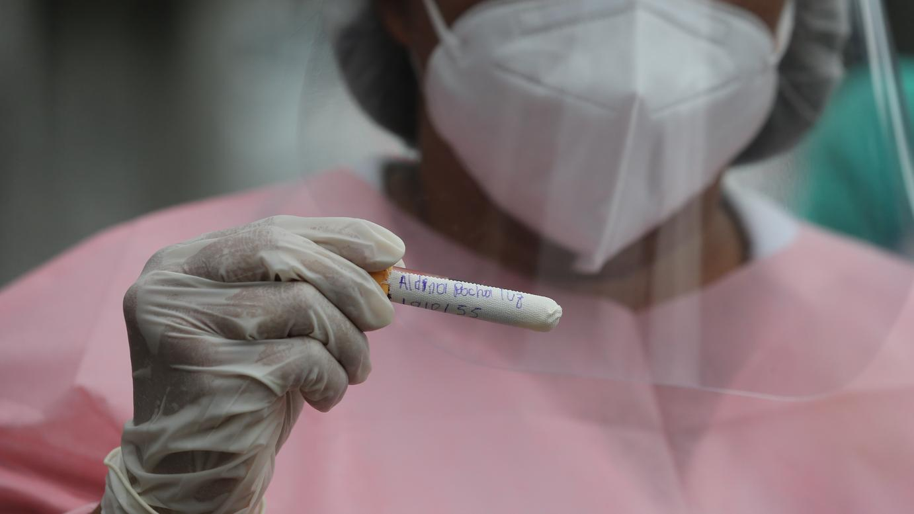

Tecnologia > Inovações
por Dr.Wendller
Atualizado em 08/11/2020 às 15h13
Mais de 17 mil profissionais de saúde já foram infectados com Covid-19 no CE
Profissionais da enfermagem são os mais afetados pela doença e representam 39% dos casos no Estado

Foto: José Leomar
Diagnóstico Covid-19 em profissionais da saúdeLegenda: De acordo com a Secretaria de Saúde (Sesa), 17.128 profissionais estão curados da doença no Estado
Entre as categorias de saúde notificadas no painel, técnicos e auxiliares de enfermagem aparecem como os profissionais cearenses mais afetados. A profissão acumula 4.535 ocorrências de Covid-19 até o momento. Enfermeiros aparecem em seguida, com 2.245 casos registrados. Somados, são 6.780 diagnósticos positivos entre os profissionais da enfermagem, o que equivale a 39% de todos os casos registrados no Estado.
Em terceiro no ranking de infecções estão os agentes comunitários de saúde, com 1.570 registros. Dão continuidade à lista os profissionais da medicina, com 1.462 ocorrências de Covid-19 acumuladas até este domingo. Embora estejam em quarto no número de infectados, médicos lideram o número de óbitos causados por Covid-19. Das 30 mortes registradas no Ceará em agentes de saúde, oito eram profissionais da medicina.
Ainda segundo as informações da Sesa, 17.128 agentes já se recuperaram da doença no Estado. Até o momento, 82.945 exames foram aplicados para diagnóstico dos profissionais e cerca de 1.208 casos seguem em investigação.
Ocorrências por município
Cidade com mais registros de casos Covid-19 no Ceará, Fortaleza também é o município com maior número de ocorrências em profissionais da saúde. Na Capital, foram 6.523 infectados até o momento. Em seguida aparecem os municípios de Sobral, com 859 casos em agentes sanitários; Caucaia (715); Juazeiro do Norte (523); e Crato (362).
Fortaleza também é a região com maior concentração de óbitos em decorrência da doença. Pelo menos 13 profissionais morreram após infecção pelo coronavírus. Além da Capital, mais 14 municípios cearenses registraram morte em agentes de saúde, de acordo com o Integrasus. São eles: Crato (3), Santana do Acaraú (2). Caucaia, Maracanaú, Iguatu, Itapipoca, Jaguaretama, São Benedito, Amontada, Redenção, Ocara, Umirim, Tamboril e Baturité notificaram, cada um, pelo menos uma fatalidade por conta de Covid-19.
Veja os casos por categoria
Técnicos e auxiliares de enfermagem: 4.535 casos, 6 óbitos
Enfermeiros: 2.245, 4 óbitos
Agentes comunitários: 1.570, um óbito
Médicos: 1.462, 8 óbitos
Agente de combate a endemias: 715, um óbito
Auxílio
Desde maio os profissionais de saúde diagnosticados com Covid-19 e seus familiares podem solicitar auxílio financeiro à Secretaria de Saúde. Podem receber o benefício aqueles que atuam na rede estadual, sejam autônomos ou cooperados, que estejam afastados do trabalho por até 30 dias. Caso o afastamento seja inferior ao limite, o pagamento será proporcional aos dias ausentes.
A quantia recebida varia por profissão. Técnicos de enfermagem e profissionais de nível médio devem receber um salário. O benefício para os agentes com nível superior de ensino é de três salários mínimos para os não médicos e quatro salários mínimos para o médico. Em caso de morte por Covid-19, serão pagos 10 salários mínimos à família, cônjuge, dependentes ou pais do profissional. O auxílio é repassado pelo Fundo Estadual de Saúde (Fundes), criado pelo Governo do Ceará.
Para solicitar o benefício por contágio, o profissional deverá preencher o formulário disponibilizado pela Sesa, com informações pessoais e bancárias, além de acrescentar atestado médico. Os dados serão validados junto à direção da unidade de saúde onde a pessoa trabalha. Em caso de casos de morte pela doença, os familiares podem entrar com pedido de seguro.
A população também pode se informar e tirar dúvidas sobre os benefícios pelos números (85) 3101 5147 e 31015267. O atendimento é de segunda a sexta-feira, das 8h às 17 horas.